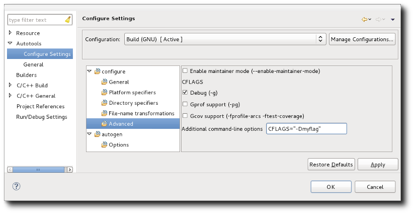
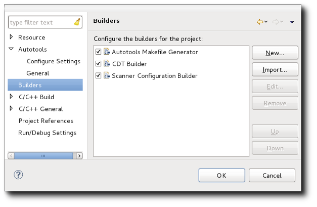
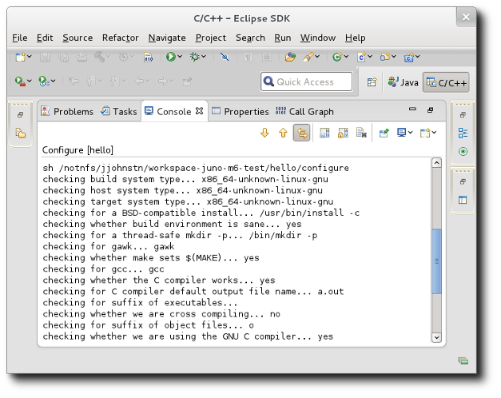
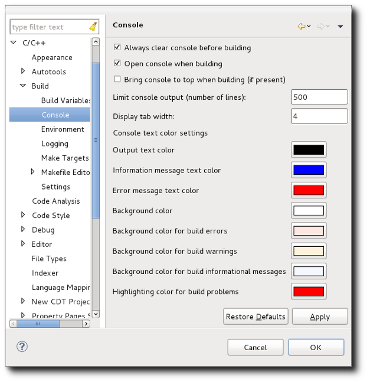

| Configuration | ||
|---|---|---|
|
|
|
|
| Creating an Autotools Project | Invoking Autotools | |
Prior to running a build, the Autotools plug-in runs the configure script. Parameters to be passed to configure may be entered via the Project -> Properties -> Autotools -> Configure Settings UI shown below:

If the top-level tree item: "Configure" is selected, you will notice how the actual configure script name is editable. It is not recommended you change the name of the configure script as this is standard for Autotool projects. However, you can use this text input to add environment variables to set prior to invoking the configure script. For example, you might set the command to: CFLAGS="-g -debug" configure to have the CFLAGS environment variable overridden while configuring. The same applies to the autogen.sh script settings. On the advanced options page, there are a few prepared compilation options such as: compiling for debugging, compiling for the gcov tool, and compiling for the gprof tool. One can also specify these options directly in the additional command-line options field as demonstrated in the screen-shot above.
For configure, there are a number of standard parameters that apply to generated configure scripts. Each parameter has its command line name presented so you can look it up in Autotools documentation. In addition, tool-tip hover help is provided.
Under the Advanced category, there is a free-form line called "Additional command-line options" where you may enter any options in their command-line format. This is useful for entering custom options that your configure script supports (e.g. --enable-feature-x or --with-lib-y). It can also be used for any of the standard parameters as well if that is more familiar tor you. Parameters in this list are appended to the end of parameters derived from the standard option entries (i.e. you could get two specifications of a parameter). In the case of multiple specification, behaviour is the same as it is on the command line. You can optionally check off the "Display help contents (--help)" option under the General category to see all the standard and custom options the configure script accepts. As the configure script help is a product of how it is written, it is sometimes possible that the help is out of date with regards to added features.
In some cases, a project may choose not to invoke the Autotools ahead of time and instead require this be done prior to configuration. The input files that are fed to the Autotools are provided, but the output of the Autotools are not. This may be done to lower the download size and additionally to avoid having to constantly regenerate the output files as the Autotools are updated. In such cases, an autogen.sh script may be provided which is simply a script that runs the various Autotools required. This script may or may not run the configure script at the end. Alternatively, there is also the autoreconf tool which can be invoked to recursively run through the source tree and run all Autotools where the input files are newer than the output files (this includes the case where no output file is present). Any options required when invoking the Autotools can be encoded within the input files themselves.
The following defines a priority list of scenarios that the Autotools plug-in checks for when performing the configure step and how each one is handled.
If after all of this, the top-level Makefile is not created, an error is generated and building stops.
The configure process can be manually forced for a project via right-clicking on any file in the project to get the Context menu and selecting the Reconfigure Project menu item. A reconfigure runs the configure script even if a config.status file is found indicating a prior configuration was successful.
The entire configuration step is performed by a special builder that is added when an Autotools project is created or converted from another project. The special builder runs the configure step and is positioned in the builder order to run prior to the Makefile builder.
From the Project -> Properties -> Builders tab for a project you will see:

Do not un-check the Autotools Makefile builder nor change the order of the builders. Modifying this will result in undefined behaviour.
The configure step output goes to a special Configuration console added by the Autotools plug-in. This console is separate from the C-Build console which is used to display the results of the make command invocation.
To see the Configure console, click on the console selector button (icon looks like a T.V.) found in the Console View and choose an entry which starts with "Configure" and has the project name.

Note that configure console output is per project and shows configuration output for the last build of the project. It is not saved between Eclipse sessions.
The Autotools console is an instance of a CDT Build console so the console preferences set in Window -> Preferences -> C/C++ -> Build Console apply as well.

|
|

|
|
| Creating an Autotools Project | Invoking Autotools |